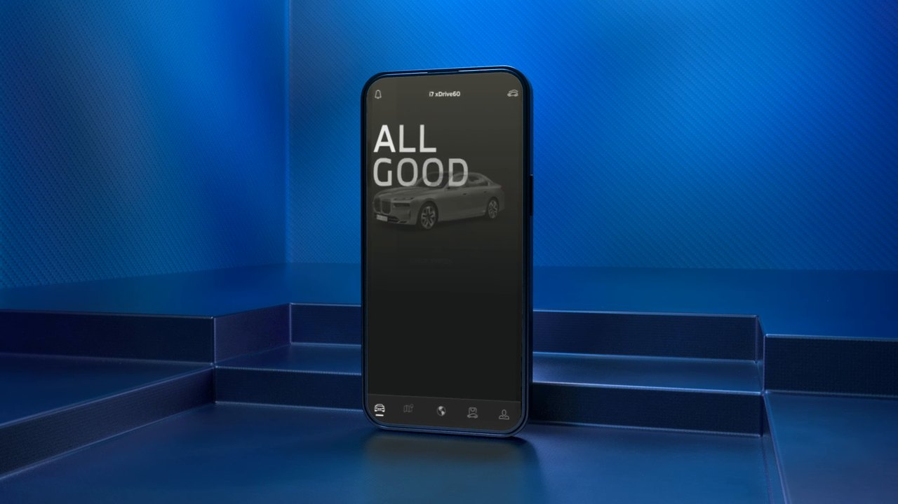
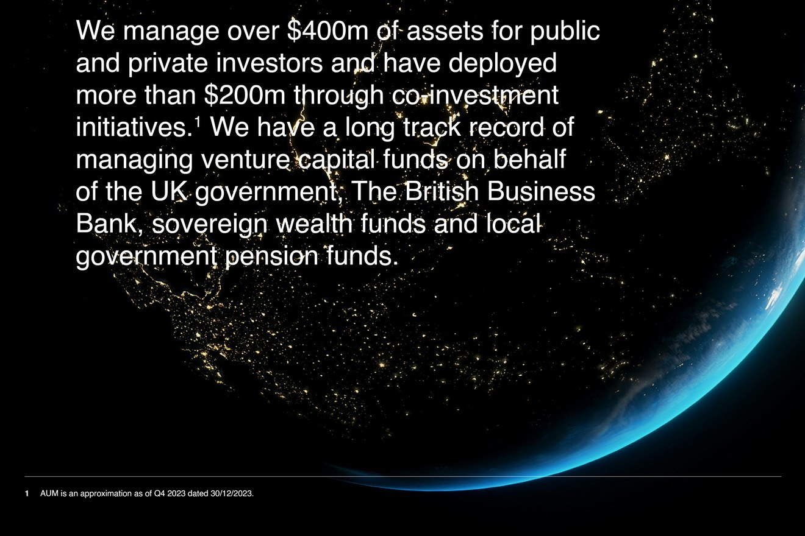

Where most buyers decide.
Your website carries more of the sale than any person in the business. We design and build digital experiences that hold the brand at full strength and move the right buyers to act.
Your website is where most buyers decide. It should carry the brand, not dilute it.
Web design and build
A site that looks and performs like the brand.
Brand-led UX
Flows shaped by the strategy, not a template.
Conversion architecture
Pages built to move the right people to act.
Motion and interaction
Detail that signals quality on contact.
Performance and SEO
Fast, found, and built to last.
Analytics and tracking
So you can see what the brand is doing.
 C-Quest · The brand, online
C-Quest · The brand, online


Architect
We map the structure to how buyers actually move.
Design
We build the brand into every screen and state.
Instrument
We wire in tracking so the work keeps paying off.
Digital work delivered for Pansports, the group behind Real Madrid, FC Barcelona and Aston Martin F1.

Find out what your brand is costing you.
Every engagement starts with the Brand Alignment Diagnostic, a fixed first step that scores your brand against the business and shows what to fix first.